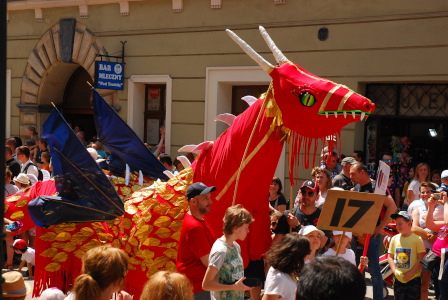

Baza Smoków
| Nazwa | Długość | Szerokość |
|---|---|---|
| Nobik | 5 | 3 |
| Rafał zielony | 6 | 2 |
| Rafał złoty | 7 | 2 |
| Luiza złota | 7 | 2 |
| Francuski pan | 2 | 2 |
| Zielony | 5 | 3 |
| Czerwony | 8 | 2 |
| Błękitny | 2 | 2 |
| Luiza srebrna | 7 | 2 |
| Francuski pogromca | 2 | 2 |
Opisy smoków
- Smok czerwony
- Pochodzi z Chin. Ma 1000 lat. Żywi się mniejszymi zwierzętami. Posiada łuski cenne na rynkach wschodnich do wyrabiania lekarstw. Jest dziki i groźny.
- Smok zielony
- Pochodzi z Bułgarii. Ma 10000 lat. Żywi się mniejszymi zwierzętami, ale tylko w kolorze zielonym. Jest kosmaty. Z sierści zgubionej przez niego, tka się najdroższe materiały.
- Smok niebieski
- Pochodzi z Francji. Ma 100 lat. Żywi się owocami morza. Jest natchnieniem dla najlepszych malarzy. Często im pozuje. Smok ten jest przyjacielem ludzi i czasami im pomaga. Jest jednak próżny i nie lubi się przepracowywać.
Galeria
